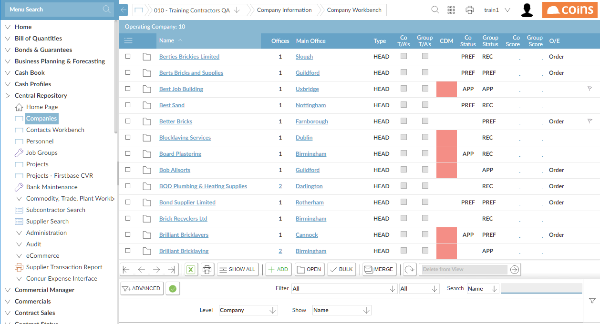
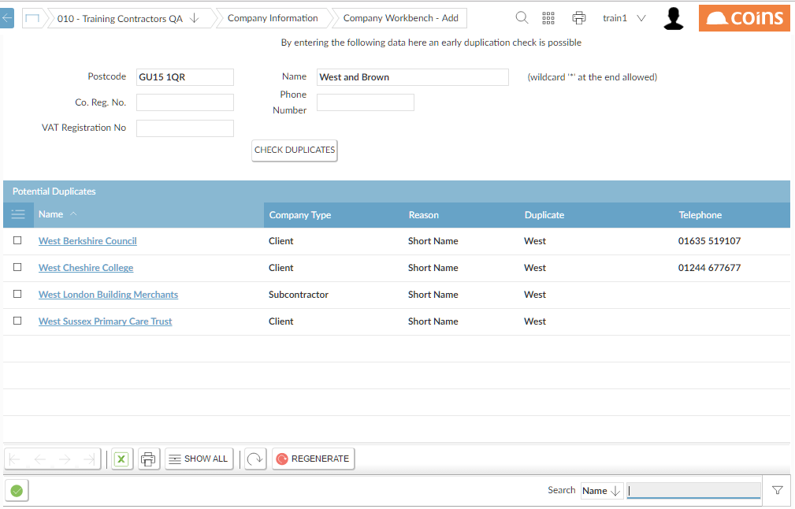
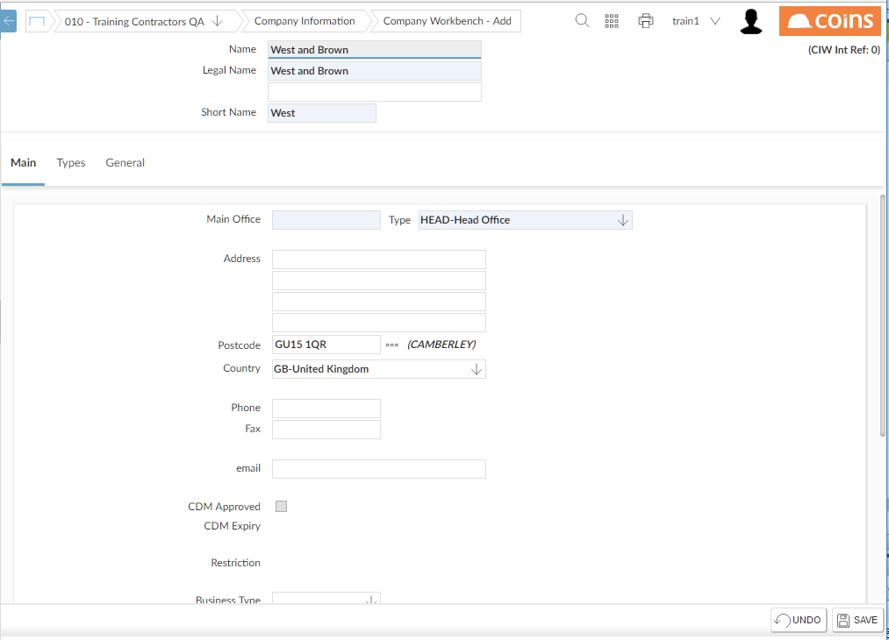
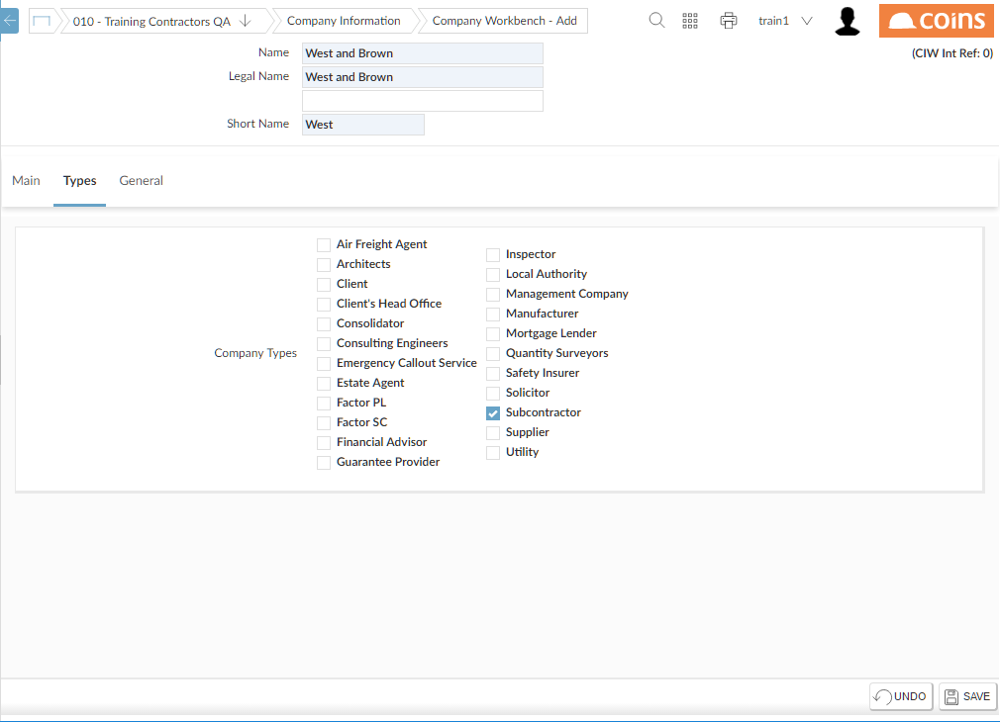
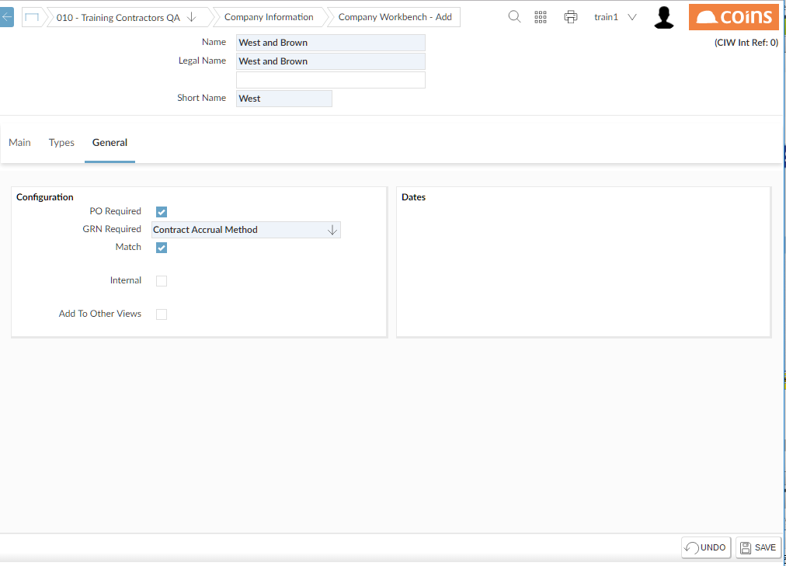

Adding a New Company
This explains how to add a new company (for example, a or Subcontractor) to the Central Repository. (You can also add other types of Company, for example an Architect, depending on the Company Type you select when adding the new Company).
The Central Repository can be separated into up to five levels of view, from Database/Group (Level 1), down to Region, or even Office level (Level 5 being the lowest level). Users are set up with a base view, between levels 2-5. A user will have access to go up levels, to view larger subsets of the Central Repository. When adding a new /Subcontractor, it will be added to your base view as well as the levels above it. For example for a level 3 user (for example, Regional view), the new /Subcontractor will be added to level 3, and also to level 2 (Company) and level 1 (Group/Database).
To add a new or subcontractor:
- Go to Companies.

- Click
 .
.
displays a screen with a prompt for various details, such as the company name and . (This is used to check for potential duplicates amongst existing company records).
- Enter whichever information you have about the new company, and click Check Duplicates.
displays a list of potential duplicate companies:

- If the new company is in this list click the link and if necessary update the details of the existing company. Otherwise, click
 to add the new company.
to add the new company.

- On the Main tab, select the office type of the main office, and enter the name and address details.
Here you can select the status code for the new company. If you leave the status code blank, assigns the default Status Code.
- On the Types tab, select the appropriate Company Type(s).

(Parameters specify which of these company types relate to subcontractors and .)
- The General tab is more relevant to than subcontractors. If you have views in other companies, then by ing Add To Other Views, this /subcontractor will also be added to your views in these other companies.
